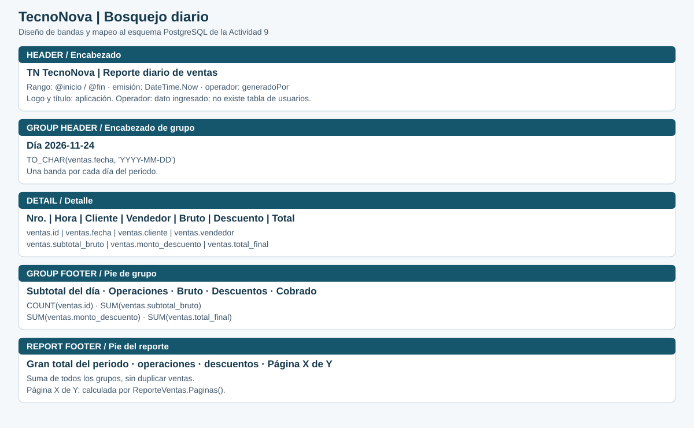
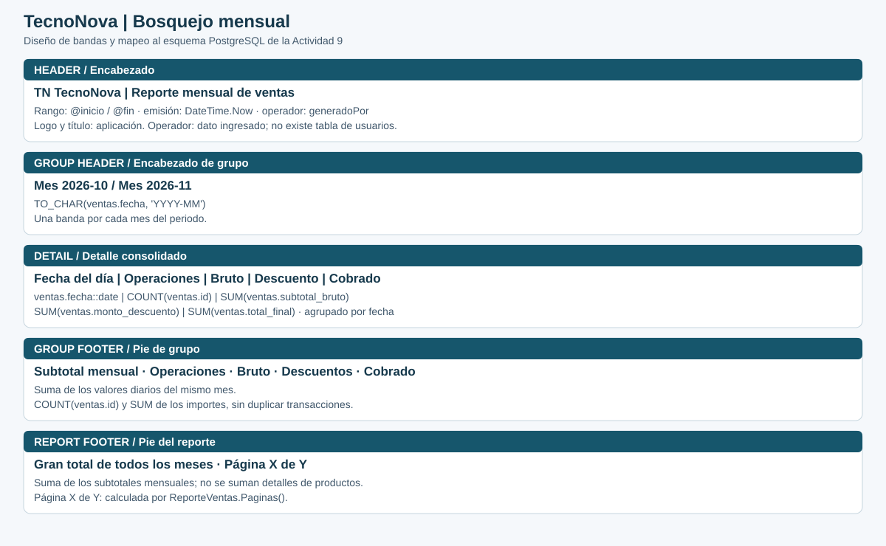

Completa los integrantes, el enlace del commit y carga las cuatro capturas reales. No cierres esta pestaña antes de imprimir.
UNIVERSIDAD PRIVADA DOMINGO SAVIO
Desarrollo de Sistemas I
Actividad 10 Reporte de ventas diario y mensual
TecnoNova
Salidas del sistema · Sprint de reportes
TECNONOVA / ACTIVIDAD 10
1. Bosquejo del reporte diario
El reporte diario muestra las ventas individualmente, separadas por fecha. Utilizamos los campos que ya existían en la tabla ventas de TecnoNova, incluyendo los descuentos añadidos en la Actividad 8. El operador que genera el reporte se escribe en el formulario, porque el proyecto base no tiene una tabla de usuarios.

Figura 1. Bandas del reporte diario y origen de cada dato.
TECNONOVA / ACTIVIDAD 10
1. Bosquejo del reporte mensual
El reporte mensual resume las operaciones de cada día y las agrupa por mes y año. Los subtotales se calculan a partir de las ventas registradas, sin unir la tabla de detalle de productos para evitar contar una venta varias veces.

Figura 2. Bandas del reporte mensual.
TECNONOVA / ACTIVIDAD 10
2. Consultas SQL implementadas
La consulta diaria recupera una fila por venta. La mensual consolida por fecha dentro de cada mes. Los parámetros de fecha permiten incluir todo el último día y evitan concatenar datos del usuario dentro del SQL.
public const string SqlDiario = @"
SELECT TO_CHAR(v.fecha, 'YYYY-MM-DD') AS periodo_grupo,
v.fecha, v.id, v.cliente, v.vendedor,
v.subtotal_bruto, v.monto_descuento, v.total_final
FROM ventas v
WHERE v.fecha >= @inicio AND v.fecha < @fin + 1
ORDER BY v.fecha, v.id;";
public const string SqlMensual = @"
SELECT TO_CHAR(v.fecha, 'YYYY-MM') AS periodo_mes,
v.fecha::date AS fecha_dia, COUNT(v.id) AS cantidad_ventas,
SUM(v.subtotal_bruto) AS subtotal_bruto,
SUM(v.monto_descuento) AS total_descuentos,
SUM(v.total_final) AS total_cobrado
FROM ventas v
WHERE v.fecha >= @inicio AND v.fecha < @fin + 1
GROUP BY TO_CHAR(v.fecha, 'YYYY-MM'), v.fecha::date
ORDER BY periodo_mes, fecha_dia;";
public const string SqlValidacion = @"
SELECT COUNT(id) AS operaciones,
COALESCE(SUM(subtotal_bruto), 0) AS bruto,
COALESCE(SUM(monto_descuento), 0) AS descuentos,
COALESCE(SUM(total_final), 0) AS total_sql
FROM ventas
WHERE fecha::date BETWEEN @inicio AND @fin;";
TECNONOVA / ACTIVIDAD 10
2. Capa de datos: ReporteDAO
El DAO abre la conexión Npgsql, selecciona la consulta según el modo y devuelve DTOs. La vista no ejecuta SQL. Los problemas de conexión se registran y se devuelve un mensaje orientador.
private static void Fechas(NpgsqlCommand cmd, DateOnly inicio, DateOnly fin)
{
cmd.Parameters.AddWithValue("inicio", NpgsqlTypes.NpgsqlDbType.Date, inicio);
cmd.Parameters.AddWithValue("fin", NpgsqlTypes.NpgsqlDbType.Date, fin);
}
public List<ReporteFila> ObtenerReporteVentas(DateOnly inicio, DateOnly fin, string tipo)
{
try
{
using var conn = new NpgsqlConnection(_cadena);
conn.Open();
bool mensual = tipo == "Mensual";
using var cmd = new NpgsqlCommand(mensual ? SqlMensual : SqlDiario, conn);
Fechas(cmd, inicio, fin);
using var r = cmd.ExecuteReader();
var filas = new List<ReporteFila>();
while (r.Read())
{
filas.Add(mensual
? new ReporteFila(r.GetString(0), r.GetFieldValue<DateOnly>(1).ToDateTime(TimeOnly.MinValue), null,
"", "", r.GetInt64(2), r.GetDecimal(3), r.GetDecimal(4), r.GetDecimal(5))
: new ReporteFila(r.GetString(0), r.GetDateTime(1), r.GetInt32(2),
r.GetString(3), r.GetString(4), 1, r.GetDecimal(5), r.GetDecimal(6), r.GetDecimal(7)));
}
return filas;
}
catch (NpgsqlException ex)
{
ErrorLog.Registrar(ex);
throw new FriendlyException("No pudimos consultar las ventas. Verifique la conexión con PostgreSQL e inténtelo nuevamente.", ex);
}
}
TECNONOVA / ACTIVIDAD 10
2. Validación cruzada y controlador
La validación SQL consulta nuevamente la tabla ventas con un SUM independiente del reporte. El controlador comprueba los filtros y entrega los datos a la vista.
public ReporteTotales VerificarTotal(DateOnly inicio, DateOnly fin)
{
try
{
using var conn = new NpgsqlConnection(_cadena);
conn.Open();
using var cmd = new NpgsqlCommand(SqlValidacion, conn);
Fechas(cmd, inicio, fin);
using var r = cmd.ExecuteReader();
r.Read();
return new ReporteTotales(r.GetInt64(0), r.GetDecimal(1), r.GetDecimal(2), r.GetDecimal(3));
}
catch (NpgsqlException ex)
{
ErrorLog.Registrar(ex);
throw new FriendlyException("No pudimos validar el total. Revise PostgreSQL.", ex);
}
}
[HttpGet]
public IActionResult Ventas(DateOnly? inicio, DateOnly? fin, string tipo = "Diario", string? generadoPor = null)
{
var hoy = DateOnly.FromDateTime(DateTime.Today);
var vm = new ReporteVentas
{
Inicio = inicio ?? hoy, Fin = fin ?? hoy, Tipo = tipo,
GeneradoPor = string.IsNullOrWhiteSpace(generadoPor) ? "Operador local" : generadoPor.Trim()
};
if (!ModelState.IsValid || vm.Inicio > vm.Fin || (tipo != "Diario" && tipo != "Mensual") || vm.GeneradoPor.Length > 100)
{
vm.Error = "Revise el rango de fechas, la granularidad y el nombre del operador (máximo 100 caracteres).";
return View(vm);
}
try
{
vm.Filas = _dao.ObtenerReporteVentas(vm.Inicio, vm.Fin, tipo);
vm.Consultado = true;
}
catch (FriendlyException ex) { vm.Error = ex.Message; }
catch (Exception ex) { ErrorLog.Registrar(ex); vm.Error = "No se pudo generar el reporte. Inténtelo nuevamente."; }
return View(vm);
}
TECNONOVA / ACTIVIDAD 10
2. Controlador de validación y presentación
[HttpGet]
public IActionResult ValidarSql(DateOnly? inicio, DateOnly? fin)
{
if (!ModelState.IsValid || inicio is null || fin is null || inicio > fin)
return BadRequest("Indique un rango de fechas válido.");
try
{
var total = _dao.VerificarTotal(inicio.Value, fin.Value);
ViewBag.Inicio = inicio.Value;
ViewBag.Fin = fin.Value;
ViewBag.Sql = ReporteDAO.SqlValidacion;
return View(total);
}
catch (FriendlyException ex) { return StatusCode(503, ex.Message); }
}
La vista Views/Reportes/Ventas.cshtml presenta las bandas y los subtotales mediante agrupaciones en C#. La clase ReporteVentas calcula el total general con decimales y divide el documento en páginas. El botón Imprimir / Guardar PDF utiliza la vista imprimible MVC y estilos de impresión.
Archivos de respaldo: Data/ReporteDAO.cs, Controllers/ReportesController.cs, Models/ReporteVentas.cs, sql/04_validacion_actividad10.sql.
TECNONOVA / ACTIVIDAD 10
3. Prueba A: reporte diario
Rango: 24/11/2026 al 24/11/2026. En una base recién preparada se esperan tres ventas y Bs 1.130,00 cobrados. Verificar que la cifra observada coincida con la consulta SQL de la siguiente página.
Captura A1 — Vista del reporte diario
Pendiente: insertar captura real de la prueba.
TECNONOVA / ACTIVIDAD 10
3. Prueba A: comprobación con SQL
La consulta independiente debe mostrar el mismo rango, número de operaciones y total. Si se registraron otras ventas durante el periodo, comparar los valores reales en ambas capturas en lugar de los importes de ejemplo.
Captura A2 — Resultado real de PostgreSQL (terminal o vista SQL)
Pendiente: insertar captura real de la prueba.
TECNONOVA / ACTIVIDAD 10
3. Prueba B: reporte mensual
Rango: 01/10/2026 al 30/11/2026. Con los datos de ejemplo se esperan dos grupos: octubre (Bs 290,00) y noviembre (Bs 1.130,00), con un total de Bs 1.420,00.
Captura B — Octubre y noviembre con subtotales y gran total
Pendiente: insertar captura real de la prueba.
TECNONOVA / ACTIVIDAD 10
3. Prueba C: rango sin datos
Rango: 01/01/2020 al 31/12/2020. El resultado esperado es un mensaje que indica que no hay ventas y sugiere ampliar el periodo, sin mostrar una tabla o PDF vacío.
Captura C — Mensaje orientador del sistema
Pendiente: insertar captura real de la prueba.
Conclusión
El módulo permite consultar las ventas de forma operativa o por periodos mensuales y revisar los importes de descuentos y cobros. Los resultados deben comprobarse con las evidencias reales adjuntas antes de entregar.